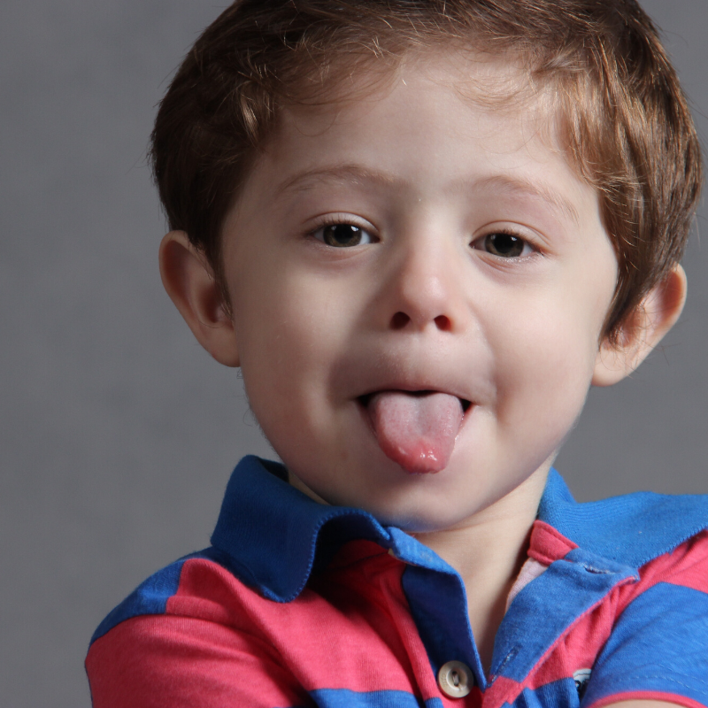

Mediante el Yoga podemos favorecer la toma de conciencia del sistema fono-articulatorio de nuestros niños y niñas, a través de ejercicios que atienden la musculatura facial y todos los órganos que se involucran en el habla.
Los ejercicios fonoarticulatorios, más conocidos como praxias, ejercitan la motricidad fina que afecta a los órganos de la articulación, de forma que el niño/a pueda adquirir agilidad y coordinación necesarias para hablar de forma correcta, articulando cada fonema (sonido) lo más preciso.
¿Cuándo realizarlo?
Cuando cantamos mantras, nos estamos vinculando con el lenguaje verbal y todo su poder, además de conocer una lengua como el gurmukhi.
Con la introducción de este tipo de ejercicios previamente al canto de mantras, estamos favoreciendo considerablemente el desarrollo integral de nuestros niños y niñas, ya que estamos siendo capaces de comprenderlos/as en su totalidad.
Podemos pedirles que sentados/as como niños y niñas yoguis, invitaremos a nuestra boca, lengua, dientes y mejillas a hacer yoga, realizando algunos de los ejercicios que te comparto a continuación:
Praxias Bucales y Linguales
(Cada acción va acompañada de una consigna que puedes utilizar para acercarlo al lenguaje del yoga)
Realizar al menos 5 veces cada acción.
- Boca abierta- Boca cerrada: Se estira la boca, se relaja la boca.
- Bostezo- Boca cerrada: Tiene sueño la boca, se duerme la boca.
- Beso sonoro- Sonrisa: Beso yogui, sonrisa yogui.
- Lengua afuera- Lengua adentro: Se estira la lengua, descansa la lengua.
- Lengua arriba- Lengua abajo: La lengua saluda al sol, la lengua saluda a la tierra.
- Lengua a la derecha- Lengua a la izquierda: La lengua mira al este, la lenguaje mira al oeste.
- Dientes superiores muerden labio inferior- Dientes inferiores muerden labio superior: Dientes de arriba hacen cosquillas, los de abajo también.
- Dientes juntos- Dientes separados: Dientes se abrazan, luego se despiden.
- Inflar mejillas y apretarlas con manos para hacer explosión con sus labios: Un globo ha llegado a mi boca, se infla y se revienta.
Sonidos Onomatopéyicos
- Sonido de un reloj: tic-tac
- Sonido de golpeo: toc-toc
- Sonido de campana: tilín-tilin
- Sonido de gallina: co-co-ro-co
- Sonido de gallo: kikiriqui- kikiriqui
Puedes acompañar los sonidos con movimientos de manos, cabeza, ojos o todo lo que se te ocurra para hacerlo más entretenido :-)